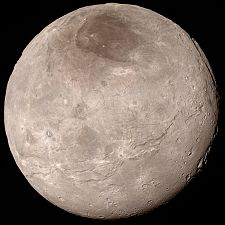

Pluto
Pluto is the biggest dwarf planet and previously the 9th planet in the solar system in the Kuiper Belt. It's smaller than Earth's moon, half the width of the United States! It has a thin atmosphere made up with nitrogen, methane, and carbon monoxide, has blue skies and snows red snow! A day lasts 153 hours (6 days), and takes 248 earth years to orbit the sun on it's elliptical tilted orbit.
Did You Know?
Pluto
Pluto is the biggest dwarf planet and previously the 9th planet in the solar system in the Kuiper Belt. It's smaller than Earth's moon, half the width of the United States! It has a thin atmosphere made up with nitrogen, methane, and carbon monoxide, has blue skies and snows red snow! A day lasts 153 hours (6 days), and takes 248 earth years to orbit the sun on it's elliptical tilted orbit.
Did You Know?
- It has a heart-shaped glacier
- NASA's New Horizons was the only spacecraft to visit Pluto
- Due to it's orbit, sometimes Pluto is closeer to us than Neptune is
- It has five moons, one being half the size of Pluto
- Pluto's name was suggested by an 11 year old

Pluto

Pluto's Heart-shaped Glacier

Pluto's largest moon, Charon